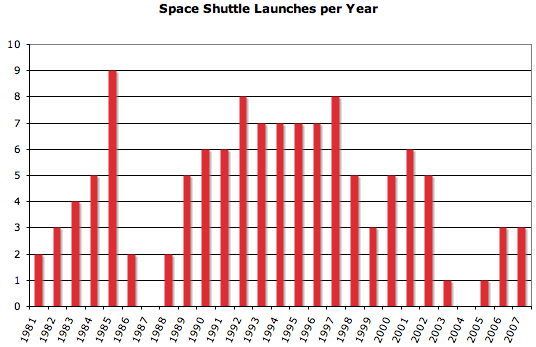

If you said “segfault”, give yourself a pat on the back! Bonus points if you know that changing the “20″ to a “16″ will prevent the segfault.
After spending several hours staring at this, I figured out what was going on. Rather than taking a compare function that returns an int (like qsort or Perl’s sort), it wants a “LessThan” function:
struct LessThan {
bool operator()(int a, int b) { return a < b; }
};
If I’ve ever been happy that C++ silently casts ints to bools, I have now done my penance. I’m still somewhat surprised that std::sort segfaults when given a strange comparison function, rather than returning an unsorted list.
One of the best perks of working at Google is the Authors@Google program, which brings in authors to speak about their books. We recently hosted xkcd‘s Randall Munroe, who gave a completely hilarious talk. I only caught the end in person, but it’s now available on YouTube for all to see.
For some context, the guy who does the intro is Peter Norvig, the guy who asks the first question is Guido van Rossum, the creator of Python, and the the guy who asks the second question is Don Knuth!
There have been two space-related stories of note in the news recently.
The first was that the launch of Space Shuttle Atlantis was delayed until January. The space shuttle has been NASA’s greatest boondoggle in history: its $145 billion cost to date has passed the Apollo program’s inflation-adjusted $135 billion. The worth of the Apollo program is an issue for another time, but at least it had a clear goal which it accomplished. The Space Shuttle has languished into old age. Seriously, does anyone realize how old this program is? Here’s a video from the launch of the first space shuttle, in 1981:
For some context, the commander of this mission was John Young. John Young walked on the moon… on his fourth space flight! Here’s a plot of space shuttle launches over time:

NASA was accelerating launches through the start of 1986, when Challenger was destroyed. The first period represents the hopes and dreams of the shuttle program. Before Challenger, it really might have made space travel routine. The middle segment, from Challenger to Columbia, is the long working life of the shuttle. Expectations were capped, and so were results. The shuttle program should have ended after Columbia. But instead, it gets a third period to die of old age.
Shuttle missions these days primarily service the International Space Station, which exists primarily to give the Space Shuttle somewhere to go. Seriously, try reading the wiki article about the Columbus module being installed on the next shuttle mission and tell me what exactly it does. Hubble Space Telescope maintenance is often pointed to as something worthwhile that the Shuttle does. Fair enough. But how many Hubble’s could we have had for $145 billion?
The second story is genuinely exciting. It comes from the European Space Agency’s CoRoT mission. At $50 million, it’s a featherweight space mission. This telescope was launched last December and has been observing stars for the past year, looking for transits. This week, they reported that “CoRoT is discovering exo-planets at a rate only set by the available resources to follow up the detections”.
This is completely nuts! There are currently 268 known exoplanets. It’s possible that this number will double in the next month as the CoRoT group begins publishing their findings on December 20. Personally, I’d consider that a more significant achievement than anything the Space Shuttle has done in the last 25 years with its $145 billion.